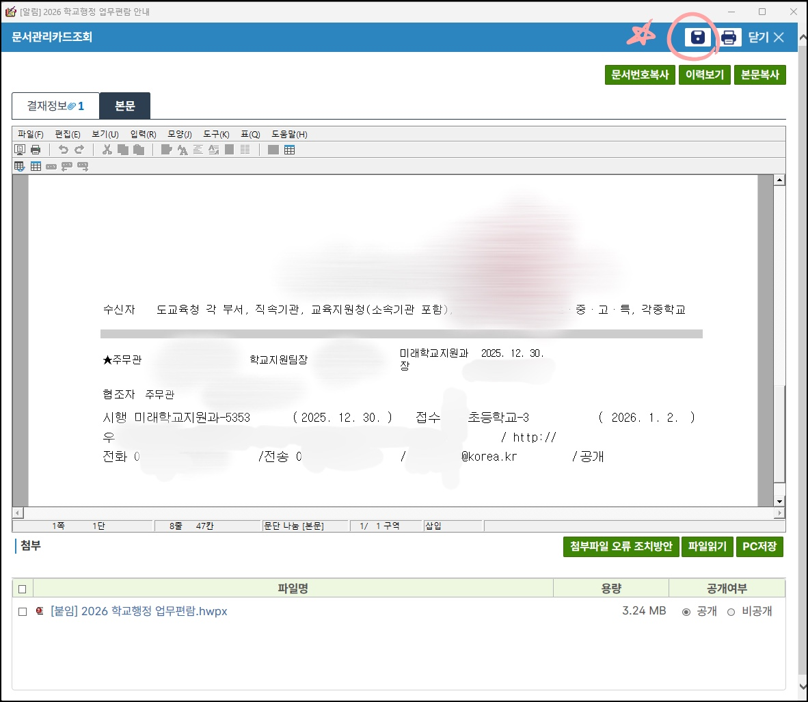
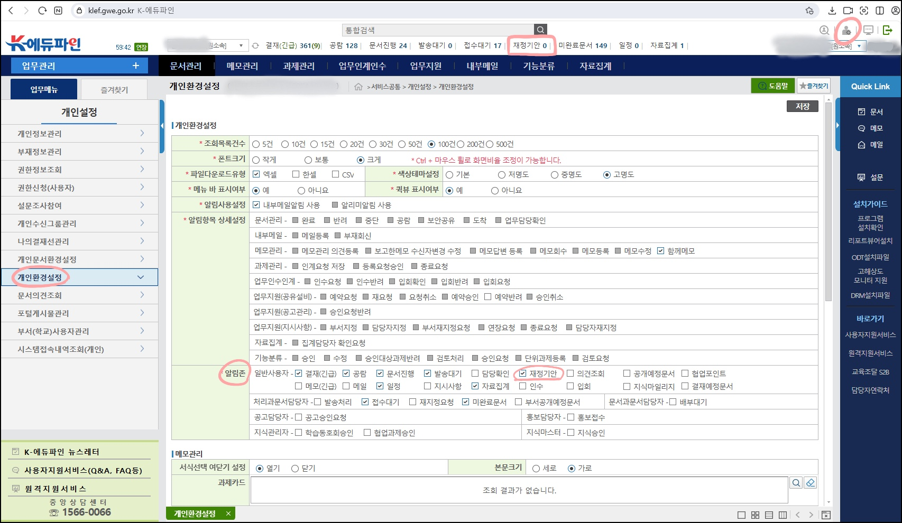
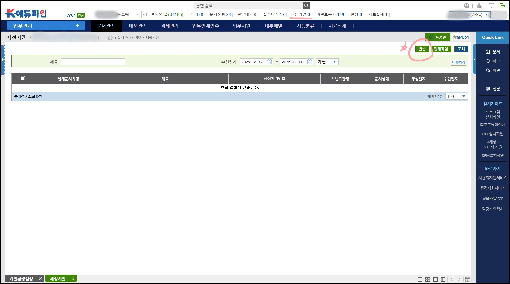
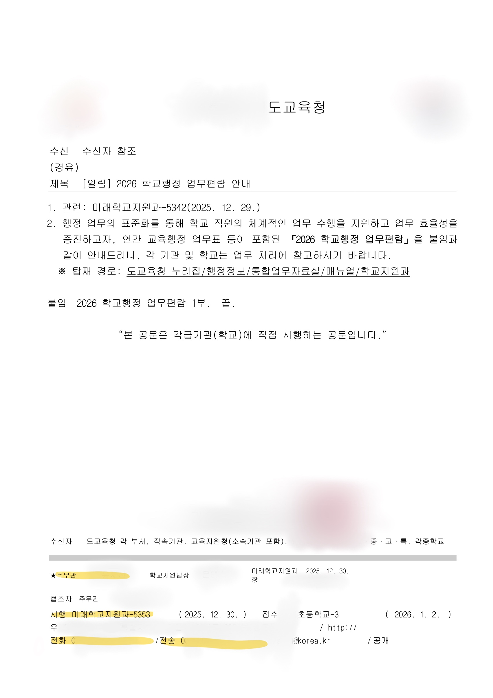

전임자가 처리한 내역 참고하기 (작성중)
- 문서등록대장에 전임자 성명으로 생산 문서를 검색한다.
에듀파인 소소한 팁
캡처화면 참고
- 공문 저장하는 방법
- “재정기안” 탭을 상단 바로가기에 고정하는 방법
- 결재요청 했던 품의·원인행위·지출결의 재작성 하는 방법
- 공문 보고 업무 담당자 이름·연락처 찾는 방법
이미지 파일을 누르면 확대됩니다.

1) 공문 저장하는 방법
문서를 누르면 우측 상단에 디스크 모양 버튼이 있습니다. 이걸 누르면 문서 본문과 첨부파일을 저장할 수 있습니다.

2) 상단 바로가기에 재정기안 탭 고정하는 방법
우측 상단의 사람 모양 아이콘 누르기 → 개인 환경설정 탭 누르기 → 알림존에서 재정기안에 체크 후 저장

3) 재정문서 재작성 하기
결재 요청 상태인 문서 중에 반송할 목록에 네모박스 체크 → 반송 클릭 → 품의저장/원인행위저장/지출결의저장 등의 상태로 변경되어 있을 겁니다. 누르면 개요와 금액 등 수정하여 재작성 가능합니다.

4) 담당자 연락처 확인하는 방법
공문 하단을 보면 담당자 이름, 연락처, 문서 시행번호 등이 표시됩니다. 해당 번호로 전화하시면 담당자와 통화 가능합니다.
Q. 담당자에게 전화해서 뭐라고 말해야 할까요?
소속과 성명을 먼저 밝히신 후에 이러한 용건으로 전화드렸다고 하시는 게 무난합니다.
"안녕하세요, oo초등학교 행정실 김신규입니다. xx업무 처리 중에 질문이 있어서 전화드렸습니다."
문서 기안할 때 체크리스트
- 오타는 없나요?
- 본문에 적은 붙임 파일들을 실제로 첨부하셨나요?
- 첨부파일은 제대로 작성되어 있나요?
- 발송해야 하는 공문인데 수신기관 설정 없이 내부결재로 올리시지는 않았나요?
- 자동발송에 체크하셨나요?
(체크리스트)
무언가 잘못된 것 같을 때 체크리스트
숫자가 이상하다
- 단순 오타인지 계산식이 잘못된 건지 확인해보세요.
- 개요에 적힌 금액과 실제 지출 금액이 다른 건 아닌지 확인해보세요.